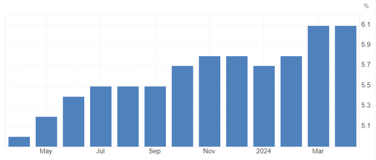
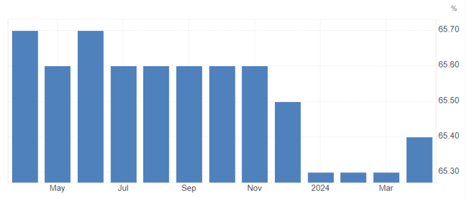
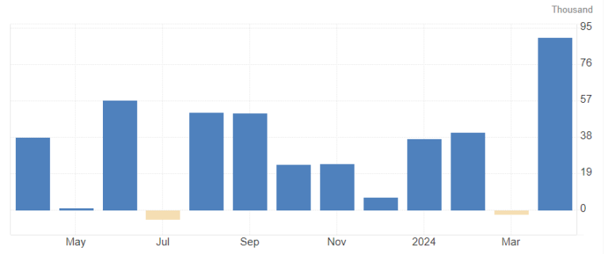
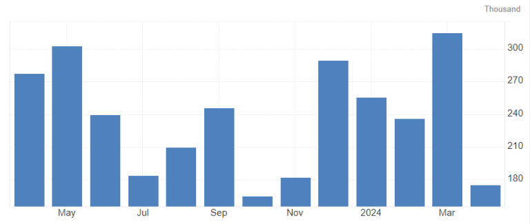
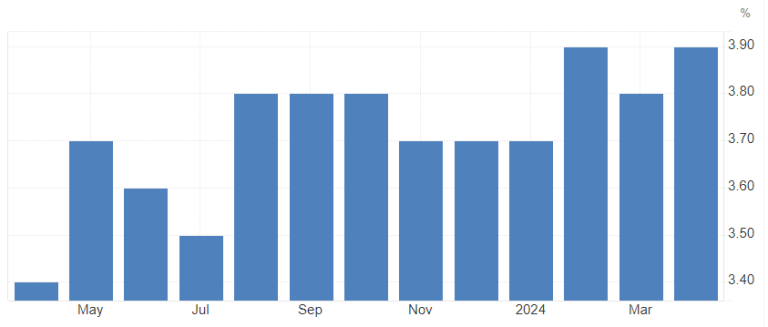
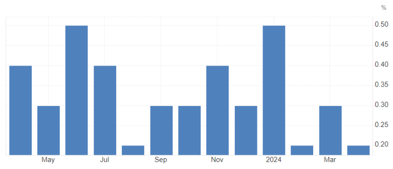
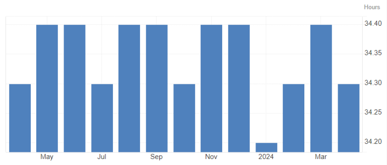
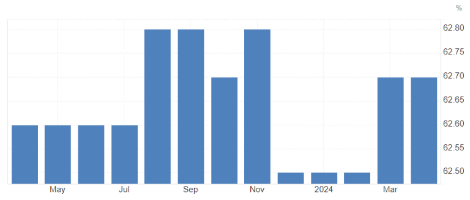

horizon trading edge
Market Blog
Horizon Trading Market Blog
Daily market outlook 07.06.24
Macro Data
IT’S NFP DAY!
We also have Canadian labor data on the docket – same release time as NFP at 8:30 am EST. Business as usual!
CAD Labor Data:
Unemployment is on the rise in Canada, and that’s nothing new here. The first uptick from the lows at 5.0% happened in May 2023 to 5.2%, and we haven’t looked back since then. A year later, we sit at 6.1% awaiting the uptick to 6.2% in today’s release.

CAD unemployment rate
The participation rate is rather stable around 65.5%, although we saw some slight downticks since the turn of the year.

CAD participation rate
Employment change saw a big rise last month at 90k, which is likely coming down a lot, with expectations sitting at 22.5k.

CAD employment change
Eyes are on wages, which are expected to come in at an annualized 4.7% compared to the last reading of 4.8%.
After the BoC’s expected cut of 25bp on Wednesday, it is going to be important to look out for all data that could either obstruct or support consecutive cuts into the latter half of the year. Not expecting too much from the data today, just heightened extra volatility across all CAD pairs, but all eyes are going to be on the other report coming out at the same time…
NFP:
Time flies, and as such, it’s the first Friday of the new month again. We all know what that means: time to gamble the life savings on a YOLO 0DT deep OTM call on SPY, 1 minute before the data hits! Time to make bank.1
The headline NFP came in at 175k for April with a consensus of 315k at the time. Quite the bummer! This time around, consensus is sitting at 185k with some “whisper” numbers on the lower side, around 151k.

US NFP headline reading
The unemployment rate, despite rising slowly, is still sitting tight right below 4%, which in theory marks the “full employment” level. Consensus is for no change on that at 3.9%.

US unemployment rate
Lots of attention is on wages again, with average hourly earnings MoM at 0.2% for April. The consensus is for an increase to 0.3%, but the “whisper” numbers are a touch lower at an unchanged 0.2%. We have generally seen a little deterioration over the last year in wage increases from roughly 0.35-0.4% MoM to a median of 0.23% in the last 3 months.

US average hourly earnings MoM
Do not forget to combine the average hourly earnings with the average weekly hours to actually get a good sense of overall earnings! Not expecting much of a change there – an average of 34.3h coming in for a year already…

US average weekly hours
Participation rate is pretty steady in the US as well, with slight up and downticks around 65.6%. Nothing major to expect there today.

US Labor Force participation rate
Let’s Have a Look at the Survey Week:
As posted yesterday in our
Discord community server, the NFP report data is collected in a specific week in the month the report is aiming at. Precisely, it works out like this:
“The Nonfarm Payroll (NFP) survey week, which is critical for understanding the U.S. employment situation, typically refers to the week that includes the 12th day of the month. The jobless claims data corresponding to this period is crucial as it provides insights into the labor market conditions around the time the NFP data is collected.
To identify the specific jobless claims week that includes the NFP survey week, you should look for the weekly unemployment insurance claims report from the U.S. Department of Labor that includes the week ending with the Saturday closest to the 12th of the month. This means the jobless claims data released on the Thursday after this specific week will contain information relevant to the NFP survey week.
For example, if the 12th of the month falls on a Wednesday, the jobless claims data for the week ending on the following Saturday (the 14th) would be considered as containing the NFP survey week data. This data would then be released on the Thursday of the following week.
Here’s a step-by-step outline to find the exact jobless claims week:
1. Identify the 12th day of the month. 2. Determine the Saturday that is closest to this 12th day. 3. The week ending on this Saturday is the jobless claims week that includes the NFP survey week. 4. The jobless claims report for this week is released on the following Thursday.
By tracking this, you can understand how initial jobless claims data relates to the employment situation reported in the NFP release.”
Shoutout to @Dellamotta for providing that part!
With that in mind, we can now look back to April and check what happened on the labor-data front in that specific week:
Initial Jobless Claims:
They came in at 223k on that Thursday, May 16, down from 232k the week before and 216k the week after.
Continuing Jobless Claims:
Came in at roughly 1.79m for the May 16 release, slightly higher than the week prior and slightly ticking up the week after as well.
All in all, pretty solid reports on that front during the NFP survey week!
Next, take a look at the employment data in the PMIs we got so far for May
ISM Manufacturing PMI Employment:A solid 51.1 for May compared to 48.6 in April.
As per the ISM report:
“ISM®’s Employment Index registered 51.1 percent in May, 2.5 percentage points higher than the April reading of 48.6 percent. “The index indicated employment expanded after seven consecutive months of contraction. Of the six big manufacturing sectors, three (Food, Beverage & Tobacco Products; Transportation Equipment; and Chemical Products) expanded employment in May. Many Business Survey Committee respondents’ companies are continuing to reduce head counts through layoffs (which accounted for 38 percent of reduction activity, down from 50 percent in April), attrition and hiring freezes. Panelists’ comments in May indicated an increase in staff reductions compared to April. The approximately 1-to-1 ratio of hiring versus reduction comments is consistent with activity from November 2023 through March,” says Fiore. An Employment Index above 50.3 percent, over time, is generally consistent with an increase in the Bureau of Labor Statistics (BLS) data on manufacturing employment.”
ISM Services PMI Employment:A 47.1 reading for May after 45.9 in April (up 4 months in a row now).
As per the ISM report:
“Employment activity in the services sector contracted in May for the fifth time in six months, preceded by six consecutive months of growth from June to November. The Employment Index registered 47.1 percent, up 1.2 percentage points from the April figure of 45.9 percent. Comments from respondents include: “Holding on filling vacancies” and “Very small incremental increase, probably due to long-term understaffing.”
All in all, some pretty decent data on the employment front with solid business commentary too, but nothing to expect a huge uptick – nor downtick – in the NFP report.
Overall, I think we could see a relatively strong headline reading, maybe eclipsing the 200k mark, taking into account the strong survey week plus strong PMI employment data for May. I mean, that has to account for something as well!
On the wage front, I’m rather neutral, same as the unemployment rate. An up- or downtick here and there wouldn’t mean a lot now anyway.
The overall trend is for easing in the labor market, and today’s report likely isn’t changing that idea unless we get a 300k+ reading again and a downtick in unemployment plus an uptick in wages. On the other side of things, if we get a sub – 170k headline reading, an uptick in unemployment, and wages going unchanged (as the whisper numbers suggest), we would have another month confirming the easing in the labor market.
In the “strong report” scenario, we would see bonds taking a little hit along with USD going up and equities taking a mini hit on the higher yields. Both bonds and equities would likely be a fade if not for a HUGE outperforming report, and even then it’s likely they would fade nonetheless, just slower over a couple of days. USD could hold a bit better.
The “weak report” scenario has the opposite (duh…) – bonds flying, USD tanking, and equities going up. Again, equities would likely fade even though that could take longer than on an equally surprising upside on the report. Bonds would likely not fade too much or at all, and USD would likely fade most of the report dip before going down again a bit later in the day and the following days.
All in all, I think the expectations are rather skewed to the downside, which is pretty surprising to me given the stronger employment data in May. That might favor reactions to an upside surprise, but at the same time, try to be aware of the whisper numbers nonetheless – last month, they have been SPOT on when it’s been around 200k vs. consensus of 315k at the time – and as said above, it came in at 175k.
As always – don’t risk too much!
Cheers and a nice weekend,
Dom
1.No real trading or investment advice – DONT do it! ..Or do it, but Im not the one liable for any losses, happily taking 50% of profits though 😉 ↩︎
horizon market edge
.png)
.png)
.png)
©2025 Horizon Market Edge .